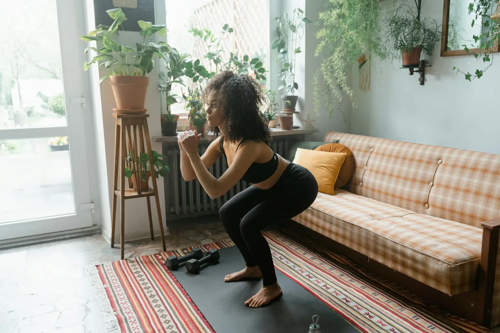

Home Strength: No Equipment, Maximum Impact

Key takeaways
- Right now, stand up and do 10 bodyweight squats.
- Feel that?
- Track what feels sustainable and adjust gradually.
But here's the thing: **you don't need fancy equipment or a huge home gym to get stronger.** Seriously. I've learned that bodyweight exercises, done with intention and proper form, can be incredibly effective. It's all about understanding how to challenge your muscles using just your own body and a little creativity. This approach has been a game-changer for me, fitting fitness into my life without adding more stress.
Let's ditch the excuses and talk about building real strength, right where you are. Whether you're in a studio apartment or just have a small corner of your living room, you've got enough space to make a difference. We're talking about maximizing impact with minimal gear.
Think about it: squats, lunges, push-ups, planks – these are all classics for a reason. They work multiple muscle groups simultaneously, giving you a fantastic bang for your buck. The key is progression. As you get stronger, you can make these exercises harder. For instance, you can slow down the tempo of your squats, add pauses at the bottom, or even progress to single-leg variations. This constant challenge is what signals your muscles to adapt and grow stronger.
I've found that focusing on compound movements is the most efficient way to train. These are exercises that use more than one joint and engage large muscle groups. They burn more calories and stimulate more muscle growth in less time. My go-to list includes variations of push-ups (on knees, incline, decline), squats (bodyweight, jump squats), lunges (forward, reverse, lateral), and planks (standard, side).
The 2-Minute Win
Right now, stand up and do 10 bodyweight squats. Feel that? That's your body working. Now, hold a plank for 30 seconds. You just completed a mini-workout! This shows you how accessible strength training can be.
Consistency is way more important than intensity when you're starting out. It’s better to do a short, effective workout three times a week than to aim for an hour-long session once and then quit. Find a schedule that works for you and stick to it. This is where a related healthy tip can really help you stay on track.
Here’s a simple workout structure you can adapt: Choose 3-4 exercises and perform 3 sets of 10-15 repetitions for each. Rest for 60-90 seconds between sets. Focus on controlled movements and good form over speed. This is a great starting point for exploring more home-workouts guides.
My biggest breakthrough was realizing that I could make exercises harder by changing *how* I did them, not just adding weight. Slowing down the eccentric (lowering) phase of a push-up, for example, makes it significantly more challenging and helps build strength.
Don't get discouraged if you can't do a full push-up yet. Start on your knees or against a wall. The goal is to challenge yourself progressively. Every little bit of effort counts towards your overall progress. This is a practical guide to getting started.
To stay consistent with this, try scheduling your workouts like any other important appointment. Put it in your calendar! You might also find that tracking your progress, even just noting down the number of reps you did, can be incredibly motivating. It's a similar wellness insight to how tracking other habits can boost success.
Remember, building strength is a journey, not a race. Celebrate small victories, listen to your body, and be patient with yourself. You've got this!
Here’s a quick checklist to get you moving:
Your Mini Strength Challenge Checklist:
- 1. Schedule your next workout session.
- 2. Pick 3 bodyweight exercises.
- 3. Aim for 3 sets of 10-15 reps (or as many as you can with good form).
- 4. Focus on slow, controlled movements.
- 5. Pat yourself on the back for showing up!
Educational only — not medical advice.
More in home-workouts
 home-workouts
home-workoutsQuick Home Strength Workouts for Any Space
Discover effective no-equipment strength training routines you can do at home, even in the smallest spaces. Get stronger
Read article → home-workouts
home-workoutsNo-Equipment Strength for Small Spaces: Get Stronger
Discover how to build serious strength at home with no equipment, even in the smallest apartments. My honest guide to ef
Read article →Related posts
home-workoutsQuick Home Strength Workouts for Any Space
Discover effective no-equipment strength training routines you can do at home, even in the smallest spaces. Get stronger
Read article →home-workoutsNo-Equipment Strength for Small Spaces: Get Stronger
Discover how to build serious strength at home with no equipment, even in the smallest apartments. My honest guide to ef
Read article → home-workouts
home-workoutsCan You Build Muscle With No Equipment? Yes, Here's How!
Discover how to build muscle effectively with no equipment at home. Get practical no-equipment workout plans and tips fo
Read article →